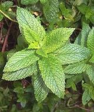
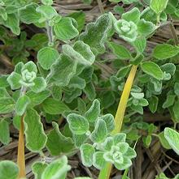
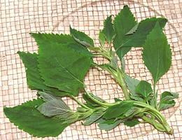
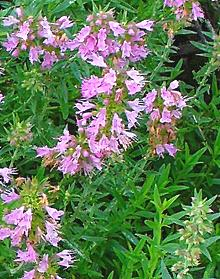

SAFARI
Users
General & History
The Mint Family is of worldwide distribution, though only Sage has much penetrated Central and South America. These powerful aromatic herbs have been in use for both culinary and medicinal purposes since long before the dawn of history.
Note: This page is, roughly, in order of relevance to people living in North America, not alphabetical or otherwise.
Mints
 [Genus Mentha - many species.]
Native to Europe, Asia, Africa, Australia and North America, mints are a major genus of mint family, cultivated worldwide as an important culinary herb.
Classifying mints is difficult even for botanists because they are highly promiscuous and cross breed with abandon, even from one species to another, and many unique cultivars have been developed. Many species have a half dozen or more "scientific" names and cultivars of the same species may vary in shape and color.
See our Mint page For
photos, descriptions and details of culinary usage for many varieties.
Basils
[Genus Ocimum - many species.]
Basils are a nearly worldwide family consisting almost entirely of small herbs. Even the one exception only reaches 10 feet on slender stems. Many of these herbs have important culinary uses. Most are annuals, but African basils are perennials.
See our Basil page For
photos, descriptions and details of culinary usage for many varieties.
[Genus Salvia - many species.]
Sages are the largest genus in the mint family, but fortunately we
need deal only with a few of them for culinary and medicinal purposes.
See our Sage page for
photos, descriptions and details of culinary usage for many
important varieties.
Rosemary
[Rosmarinus officinalis]
Rosemary is native to the Mediterranean region. From it's needle like leaves and strong resinous aroma you'd almost think this was some sort of conifer, but no, it's yet another mint. This is a very powerful herb to be used with discretion, fresh or dried. Fresh is considered superior for all uses, and it's the easiest herb there is to have fresh - it grows eagerly under poor conditions and can even get out of control. Various rosemary cultivars are used as durable, almost indestructible hedges, ground covers and decoratives here in Southern California - and it even grows well in England!
Rosemary has
an affinity for meats, poultry and some vegetables when fried in olive oil,
particularly potatoes but also eggplant, zucchini and tomatoes. It also has
medicinal properties and is thought to help protect the brain from free
radicals and possibly improve memory. It is very safe in culinary and
therapeutic doses but is toxic in very large amounts (how you could eat that
much of it I haven't a clue) and rosemary oil or extract must be used
carefully. Details and Cooking.
Thyme
[Zatar (Farsi & other), Thymus vulgaris (Mint family)]
While there are over 300 species of thyme, nearly all those of culinary use are varieties of T. vulgaris, a native of southern Europe and the Near East. Thyme is used especially for flavoring meat dishes and soup stocks. It is a very important herb throughout southern Europe, North Africa, Anatolia and the Near and Middle East as far as Persia, then tapering off into India. It is also important in the Caribbean and is well known as a powerful medicinal throughout its range. Thyme dries relatively well so it is often used as a dried herb. Details and Cooking.
Other Thymes: While Thymus vulgaris is by for the most
important culinary thyme, others are also used. Details will be found on
the Details and Cooking page.
Marjoram & Oregano
- [genus Origanum]
Marjoram[Sweet Marjoram, Knotted Marjoram; Origanum majorana]
Native to the Mediterranean region, marjoram was known to the ancient
Greeks and Romans. It remains one of the most important herbs used
in the cuisines of Mediterranean Europe and the Levant. Marjoram is
as often as not used dried as it holds flavors well while drying.
Flavor holds better if the leaves are removed from the stems for
drying.
Details and Cooking.
Oregano[Wild Marjoram; Origanum vulgare]
Native to the Mediterranean region and farther inland, this herb is
much used in Italian-American cuisine (as distinct from Italian
cuisine, which is quite different). It is used in southern Italy,
but the more gentle Marjoram is preferred to the north.
Oregano also finds plenty of application in Portugal, Spain, Greece,
Turkey, the Levant and Egypt, as well as Latin America and the
Philippines.
Oregano is used more dried than fresh, as its flavors intensify when
dried. Flavor holds better if the leaves are removed from the stems
for drying.
Details and Cooking.
Ditany of Crete [Hop Marjoram; Origanum dictamnus]
[Hop Marjoram; Origanum dictamnus]
This herb grows only on rocky crags of the Greek island of Crete. It
is easily recognized by the light gray fuzz that covers its stems
and leaves. It has been held since ancient times to have both
medicinal and magical properties. It is also highly aromatic and
used to flavor vermouth, absinthe and herbal teas. It is now farmed
on Crete because men no longer wish to risk life and limb to pluck
it from the high rocks - and because of government protection of
wild plants.
Za'atar [Lebanese oregano, Syrian oregano; Ezov (Hebrew); Bible hussop (mistranslation); Origanum syriacum]
This herb is extremely important in the Levant and Middle East, where
it is native. A spice mix based on it is also called Za'atar. It is
a small shrub, up to about 3 feet high with small white or pale pink
flowers. Both the spice mix and the dried herb are used in the Levant
and Middle East, and the herb, often fresh, is used in Morocco.
The fresh herb is not much available in North America, but can be
faked up with a mix of Thyme and Oregano. Traditionally, za'atar has
been gathered wild, but the demand is now so high it has entered
cultivation.
Details and Cooking.
Photo by Raffi Kojian distributed under license
Creative Commons
Attribution-Share Alike 3.0 Unported.
|
Savory
- [genus Satureja, also genus Clinopodium]
Summer Savory[Marzeh (Farsi); Satureja hortensis] This annual herb is the savory available in markets in North America, where Winter savory is rarely seen (if ever). While savory resembles thyme, it is used more with vegetables, eggs and fish rather than meats, particularly with beans and lentils where it is said to significantly improve digestion. It is, however, also used with meats and is often an herb included in sausages. While a minor herb in most of North America, summer savory is
popular in the Maritime Provinces of Canada where it is used instead
of Sage. Savory is particularly important to the cuisines of Bulgaria
and Romania.
Details and Cooking.
Winter Savory[Satureja montana]
Winter savory, a perennial shrub, is pretty much interchangeable with
Summer Savory but is considered more bitter - this difference fades
somewhat with cooking. It is, of course, not marketed here in
Southern California, because we don't have winter.
Photo by Kurt Stueber distributed under license
Creative Commons
Attribution-ShareAlike 3.0 Unported.
Yerba Buena[Clinopodium douglasii alt Satureja douglasii]
Properly, Yerba Buena names this species, but in most Spanish
speaking countries the name is applied to whatever local mint is at
hand. This herb is native from coastal Alaska down to the tip of
Baja California.
Photo by Gordon Leppig & Andrea J. Pickart for US
Fish and Wildlife service = public domain.
|
Cuban Oregano
[Spanish Thyme, Mexican Thyme, Mexican Mint, Indian Borage; Orégano Brujo (Puerto Rico); Húng chana (Viet); Daun Bangun-Banun (Malay); Pok-Hor, Po-Ho; Plectranthus amboinicus]
This fleshy leaved plant is native to South and East Africa, but has been
planted in the tropics and subtropics worldwide. As some of the names imply,
it's popular in the Caribbean region. With a scent and flavor similar to
oregano and thyme, it is used in similar ways for seasoning meat and poultry.
It is also a traditional medicinal, particularly for cough, sore throat and
nasal congestion.
Photo by Obsidian Soul contributed to the Public
Domain.
Lavender
[English Lavender; Lavandula angustifolia]
Lavender is native to the Western Mediterranean region, particularly the mountains of northern Spain. While not traditionally used in the cuisines of southern France, a commercial concoction called Herbs de Provence was invented which usually includes lavender flowers. Nonetheless, lavender buds, the only part containing the aromatic oils, are increasingly used as a flavoring and are often paired with sheep and goat cheese.
In the Mediterranean region bees gather nectar from fields of lavender, producing a monofloral honey that is sold for a premium price. Lavender flowers are sometimes candied and used as cake decorations, and dried lavender buds are sometimes blended with black, green or herbal teas to add a fresh fragrance.
Lavender oil has medicinal properties and is used to induce relaxation,
but needs to be used cautiously because it does have some toxic effects,
including stimulating boob growth in young boys, who would rather the
growth be elsewhere.
Photo by Guywets, contributed to the Public
Domain.
Melissa / Lemon Balm
[Melissa officinalis]
Native to southern Europe and the Mediterranean region, this herb and is
a favorite in North American herb gardens - but it has escaped and now
grows wild in warmer regions. The leaves have a light lemony flavor
and are used in teas, fruit salads, iced teas, and in cooking as a
substitute for lemon peel.
Photo distributed under license Creative Commons
Attribution-Share
Alike 3.0 Unported.
Perilla
- [Shiso (Japan); Deulkkae, Tulkkae, Kkaennip, Sesame leaf (Korea); Tia to (Vietnam); Pak Maengda (Laos); Zi su (China); Silem (Nepal, India); Shiso, Beefsteak plant, Purple mint, Japanese basil, Wild coleus (North America); Perilla frutescens var japonica and others]
Perilla LeafThese large leaves are widely used, particularly in Japan and Korea, whole or shredded, as a garnish. Young flower spikes are used as a garnish and to flavor pickles in Japan and Taiwan. the photo specimens are clearly Korean. The Japanese Shiso leaves are much more deeply serrated, they lack the purple color on the underside common with the Korean variety, and the flavor is slightly different. The Korean variety is much more available here in Los Angeles as Japanese markets are now few and far between while Korean markets proliferate like rabbits. For unknown reasons, the Korean name translates to "Wild Sesame"
or "Sesame Leaf", despite perilla being related to sesame only at the
very distant order level. Actual sesame leaves are rarely eaten,
though edible. The Chinese use perilla mostly as a medicinal to
stimulate the immune system rather than in their cuisine.
Details and Cooking
Tia-to Leaves The Vietnamese variety of perilla is considerably smaller than
the Korean or Japanese, and is more aromatic. It is used in soups and
stews, and particularly with rice vermicelli dishes called
bún. In Laos they are used in a similar dish called
kao phoon.
The Vietnamese variety of perilla is considerably smaller than
the Korean or Japanese, and is more aromatic. It is used in soups and
stews, and particularly with rice vermicelli dishes called
bún. In Laos they are used in a similar dish called
kao phoon.
These leaves are often available in some of the large Asian markets
here in Los Angeles.
Details and Cooking
Perilla Seeds - Seed Powder - Seed OilPerilla seeds are less than 0.04 inches (1 mm) in diameter. In Korea, they may be added to a recipe, or toasted, crushed and mixed with sesame and salt for use as a condiment. They are similarly used mixed with salt in Japan. In Nepal, and nearby parts of India, they are toasted, ground and mixed with salt, chili and tomato to make a condiment or dip. Powdered seeds are used as a flavoring and thickener. Perilla seeds yield an oil high in ALA Omega-3 fatty acids. It
can stand cooking temperatures up to 350°F/177°C. Seeds,
Powder and Oil are all available from Korean markets here in Southern
California.
Details and Cooking.
|
Vietnamese Balm
 [Vietnamese Lemon Mint, Cockscomb Mint; Rau Kinh Gioi, Lá Kinh Gioi; Elsholtzia ciliata]
Pronounced "Kin Zoy", the leaves of this plant are thin and delicate
with the taste of a lemony combination of mint and Thai basil. The
plant bears flat spikes of light lavender colored flowers. Leaves are
generally eaten raw, included on an herb plate that may accompany
cooked foods such as grilled meats. The raw leaves may also be stirred
into soups, such a Pho, included in egg rolls, meat balls and the
like. Here in Southern California these leaves are often available in
the big Asian markets along Valley Blvd in Los Angeles (Alhambra,
San Gabriel), and in Little Saigon down in Orange County.
Horehound
[White Horehound, Common Horehound; Marrubium vulgare]
Native to Europe, Asia and North Africa, this herb has become a noxious
weed in southern Australia and grows wild in North America. It has long
been a folk medicine and is common as Horehound Lozenge candies used
mainly to treat sore throats and reduce inflammation.
Photo distributed under license Creative Commons
Attribution-Share
Alike 3.0 Unported.
Self-Heal
[Heal-all, Allheal; Prunella vulgaris]
Native to North America, Europe and Asia, this perennial herb has long
had a reputation as a medicinal, but leaves can also be eaten fresh in
salads, soups and stews. The whole plant can be crushed and made into a
cold infusion as a refreshing beverage. Medicinally the plant is used
internally for many complaints, and a poultice is applied externally to
help heal wounds. The photo specimens, from a batch of dried flower heads
ranging from 1 to 3 inches long, were purchased from a large Asian market
in Los Angeles. They made a quite pleasant, slightly minty herbal tea.
Coleus Potato
[Chinese Potato, Country Potato, Native Potato, Madagascar Potato; Plectranthus rotundifolius alt Solenostemon rotundifolius Welayta dinich (Amharic); Plectranthus edulis | Dazo, Rizga, Umbondive; Plectranthus esculentus]
This plant, native to tropical Africa, is farmed as a root crop in tropical Africa and South and Southeast Asia. Photo by Manojk distributed under license Creative Commons Attribution-Share Alike 3.0 Unported.
The closely related P. esculentus is grown in East Africa and is more difficult to cultivate than P. rotundifolius but produces a better yield.
The closely related P. edulis is grown as a root crop in
Ethiopia. It is cooked before eating.
Frosted Mint
[Poliomintha incana]
This mint, unlike many, can stand very dry land. It is one of the flavoring
herbs available to the Hopi and Tewa pueblo peoples of the American
Southwest. It is a highly aromatic small shrub with light purple flowers.
Photo by U.S. National Park Service = Public Domain.
Bergamot / Beebalm
[Oswego Tea, Horsemint, Monarda fistulosa, M. didyma, M.citriodora, M. punctata and a bunch of other species]
Native to North America, these plants have a long history as powerful
medicinals, particularly as antiseptics and to treat headache and
fevers, but some were also eaten by American Indians as a flavoring herb.
Beebalm tastes like a mix of spearmint, peppermint and oregano, and was
used mainly to season wild game, particularly birds.
Photo distributed under license Creative Commons
Attribution-Share
Alike 3.0 Unported.
Muña / Peperina
[Minthostachys mollis (Muña) | M. verticillata (peperina) and some local species]
Native to the Andes region of South America, these herbs are very
important as medicinals and to protect stored tubers from pests. They
are also used as a condiment for flavoring food. Currently the stocks
have been over exploited and researchers are trying to find ways bring it
into cultivation.
Photo by Evavequ distributed under license
Creative Commons
Attribution-Share Alike 4.0 International.
Eweta / Marugbo
 [Eweta, Marugbo (Nigeria (Ikale, Ilaje, Apoi)); Dagba (Nigeria (Urhobo);
(Obenetete (Nigeria (Itsekiri)); Clerodendrum volubile of family
Lamiaceae - formerly family Verbenaceae]
[Eweta, Marugbo (Nigeria (Ikale, Ilaje, Apoi)); Dagba (Nigeria (Urhobo);
(Obenetete (Nigeria (Itsekiri)); Clerodendrum volubile of family
Lamiaceae - formerly family Verbenaceae]
Best known from southern Nigeria, this climbing plant is also reported
from other West African countries and as far south as Angola. The highly
medicinal leaf is used in Nigera as an ingredient in Marugbo (Eweta) soup
and also Gbanunu soup which incorporates other medicinal herbs.
Details and Cooking
Korean Mint
[Blue Licorice, Purple Giant Hyssop, Indian Mint; Huo xlang (China); Bangannip (Korea); Agastache rugosa]
In Korea this herb is used to flavor some forms of Jeon pancakes.
More famously it is used in stew, particularly Bosintang, a
stew of dog meat, to remove objectional odors. While this stew has
been banned by the government of South Korea, it is still popular and
easy to find in restaurants if you ask around. In North Korea all the
dogs were probably eaten long ago.
This plant is one of the 50 fundamental herbs of Chinese medicine.
Photo by Stanislav Doronenko distributed under license
Creative Commons
Attribution-Share Alike 3.0 Unported.
Hyssop
 [Hyssopus officinalis]
Native to southern Europe, east to the Middle East and around the
Caspian Sea, this herb has been known for its medicinal properties
since ancient times. Beekeepers favor hyssop for a rich and aromatic
honey. It is used in cooking, but judiciously due to the intensity
if it's minty aroma. It is also used to flavor Chartreuse liqueur.
Photo by H.Zell distributed under license
Creative Commons
Attribution-Share Alike 3.0 Unported.
Mexican Giant Hyssop
[Agastache mexicana]
Native to semi-arid regions of southern North America, this herb can
grow to a little over three feet tall. The leaves are lemon scented
and often used to flavor food. Young leaves are brewed into an herb tea.
Photo by Chhe released to the public domain.
Beautyberry
[Callicarpa americana]
Native to North America, this shrub ranges from Maryland to Florida
and west to Texas and Arkansas. It can also be found in the Caribbean
and parts of Mexico. While the berries of other species of
Callicarpa are too bitter to eat, americana berries are
fairly sweet, but are quite astringent. The berries are made into jams
and are used to make beautyberry wine. The roots are used to make an
herbal tea. Crushed leaves are a powerful insect repellant, effective
against mosquitos and flies.
Photo by Eric Hunt distributed under license
Creative Commons
Attribution-Share Alike 3.0 Unported.
Teak
[Tectona grandis]
Teak is the largest of the mints, growing to over 130 feet tall.
While it is best know for decay resistant lumber used for fine furniture and
yacht decking, it does have culinary uses. The use best known
in North America is salad bowls and salad serving utensils, but in the
regions where teak grows (the tropics of India and Southeast Asia) the
leaves are used for wrappers when making jackfruit dumplings.
Photo ©
i0112.